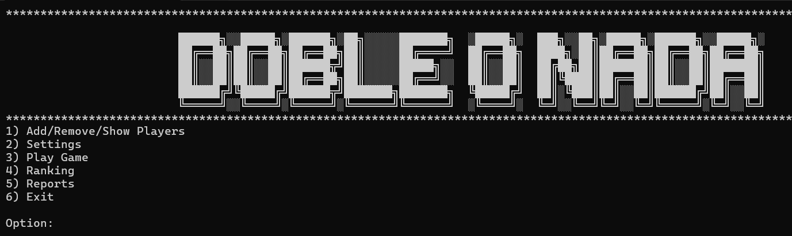

Bienvenido a Doble o nada 💸

Objetivo del Juego
- El objetivo es acercarte lo más posible al 7,5 sin pasarte.
- Juegas contra el resto de jugadores de la partida, uno jugará como banca al iniciarla.
Tipos de Barajas
- Baraja Española (40 cartas): Sin ochos ni nueves.
- Baraja Española Extendida (48 cartas): Incluye ochos y nueves.
- Baraja de Póker (52 cartas): Incluye ochos, nueves y dieces además de las figuras.
Valor de las Cartas
- Cartas numéricas (1 al 7): Su valor es igual al número indicado en la carta.
- (8 al 10) y figuras (Sota, Jota, Caballo, Reina, Rey): Valen 0,5 puntos cada una.
Cómo Jugar
- Configuración: Selecciona la baraja y el número de rondas en la configuración.
- Turnos: Cada jugador recibe una carta inicial (que en la primera ronda decidirá quién es la banca).
- La banca es el jugador con la carta más alta. En caso de empate, se decide con los palos en este orden: Oros, Copas, Espadas, Bastos.
- Una vez determinado el orden, las cartas se devuelven al mazo, que se baraja de nuevo.
- Opciones en cada turno:
- Pedir carta: Recibes una carta y se te suma su puntuación.
- Plantarse: Pasas el turno al siguiente jugador o se evalúa quién gana la ronda.
- La banca: Juega al final de cada ronda y gana en caso de empate.
Cambios en la Banca
- Si la banca no saca 7,5 y hay jugadores que lo consiguen, el jugador con mayor prioridad entre los candidatos se convierte en la nueva banca.
- Si la banca es eliminada y no hay candidatos, el jugador con mayor prioridad se convierte en la nueva banca.
Condiciones de Victoria
- Gana el jugador que esté más cerca de 7,5 sin pasarse.
- Si hay empate, la banca tiene prioridad.
- Un jugador que consiga ganar con 7,5 recibirá el doble de su apuesta.
Condiciones de Derrota
- Un jugador que pierde todos sus puntos es eliminado del juego.
- Los jugadores restantes continúan con el juego hasta que haya un ganador o se cumplan las rondas máximas.


 Tutorial
Tutorial Equipo
Equipo Programación
Programación